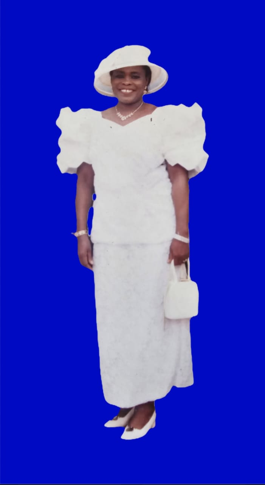

Service of Songs
In Honor of Chinyere Roseline Ngwaba
(Nee Nwoko) — 1952–2025

Date: Saturday, January 3, 2026 · 6:00 PM – 10:00 PM (PROMPT)
Location: The Salvation Army — 20021 Aircraft Drive, Germantown, MD 20874
Phone: 240-888-7278
Please RSVP below:
Program
- Opening Prayers
- Musical Presentations: Goodness of God; In the Garden; He Hideth My Soul; Nearer My God to Thee; Just a Closer Walk With Thee; Be Still My Soul
- Brief Biography
- Song & Speech — By Chinenye (Granddaughter)
- Reflections — Dr. Victor Poopola
- Choir Presentations
- Speech — Daughter
- Speech — Son-in-law
- Prayers for the Family
- Vote of Thanks — By Obi (Son-in-law)
Refreshments
Meat pies, Puff puff, Doughnuts, Coated peanuts, Fruits, Grilled fish, Peppered meat,
Grilled chicken.
Drinks: Coffee, Tea, Water, Apple juice, Pineapple juice.
Thank you for joining us to celebrate a beautiful life well lived.
Support the Family
Please kindly use the Zelle QR code below if you wish to support the family.